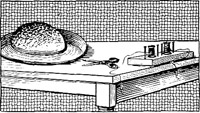

1928—The New-Way Course in Millinery and Hat Design
Lesson 24—Opening a Millinery Shop
Are You Going to Open a Millinery Shop?
You can, if you want to. You have all the knowledge you will require for making hats that your patrons will be delighted with, and in this lesson we are going to show you how to open a shop at a minimum cost. Of course you realize that any new project carries with it the necessity for hard work and sincere efforts. But granting you are willing to take your work seriously, and to progress steadily, your millinery shop will be a success.
There are many important little problems that must be solved before one can successfully run a millinery shop. Salespeople must be employed, letters soliciting patronage must be written, furniture must be bought, stock must be prepared. It is not easy, but it is fascinating to those who love activity and progress.
First let us consider the salespeople, the employees. They play a large part in the success of your little shop, and you must know exactly how to employ them, how to keep them, how to inspire their best services. Cooperation is a great aid to success, and you can gain the whole-hearted cooperation of your helpers if you approach them in the right spirit. Let them think they have a share in the success of your organization; inspire them to take pride in their handicraft; be courteous and considerate at all times.
Concerning Salespeople
Always remember that it is poor economy to employ haphazard workers or indifferent salespeople. In the workroom they will spoil more material than one can afford, and in the salesroom they will turn away many unsatisfied customers. If the workroom and salesroom are both properly managed, there will be little loss.
There are certain so-called "dull seasons" in the millinery profession. During these periods, which are usually in the late fall and early spring, it is wise to keep your employees busy putting stock in order, taking inventory, renovating. It is always best to have enough capital in reserve to carry you over the first few dull periods, but if you incorporate a side-line in your business you can "push" that side-line while the millinery business is at a depression. Many milliners sell attractive little bags, pillows, slippers, etc., for gifts during the Christmas and Easter seasons.
Salespeople should be neatly and seasonably dressed. In the summer neat linen frocks are best; in the cooler months dark-colored silk frocks are appropriate. Nothing elaborate should be worn, but the salespeople should look attractive as very often the patrons will request them to wear the hats in order to see how they look.
Always keep your rooms quiet. Noisy confusion is not compatible with the best work. It may be a good plan, also to have a sign conspicuously placed in your workroom, reading, "A place for everything, and everything in its place." And always be sure to provide your millinery workers with plenty of fashion magazines which they can study in the quest of new style ideas.
Buying Stock and Furniture
The first duty that confronts you when you plan a millinery shop is the purchase of furniture. Some of the newer millinery shops are decorated in gray with hand-painting in blue, rose and other harmonizing colors. Wicker furniture is effective, but not very substantial.
When buying furniture, always take effect into consideration. It is perfectly all right to think about cost and about wear, but you will find that your customers will appreciate an attractive environment. Besides, what hat doesn't look prettier when framed by an attractive mirror in an attractive alcove?
Talking of mirrors, your shop will require a great many. They may be square, oval or oblong, but you should hang them in such manner that they show the hat and face only, not the entire figure. This is a psychological fact that milliners have learned through experience; a woman will often refuse a hat simply because she is disappointed in the appearance of her figure in the mirror. Always keep your mirrors clear and spotless by wiping often with damp cheesecloth.
Find out the best place to purchase your furniture. Many firms allow cash discounts, and some allow discounts for cash within thirty or sixty days. Take advantage of these discounts wherever possible, as they help to a surprising degree. Wise purchasing in the beginning will leave you with sufficient surplus to tide you over any dull periods that may come.
When purchasing rugs, remember that a dark rug shows dust and lint more readily than lighter colored rugs. Green fades easily, as do light blues also. A good weave has a small pattern, while boldly designed rugs may be safely interpreted as cheap fabrics. Tans and reds retain their color.
Purchase your stock wisely. Do not purchase too much buckram and too little velvet. Proportion your available capital in such manner that you will have enough for everything you need, even if you can purchase only a little of each thing. Do not make the mistake of purchasing in the Fall what you will be able to sell only in the Summer; be seasonable as well as sensible in your selection.
You will need convenient work-tables for the workroom, wall-pockets for odds-and-ends; plenty of equipment for the workers; a chest of drawers in which to keep the materials. For the salesroom you will need several attractive chairs and a table; chests of drawers; mirrors; trees for hats on display; an attractive floor lamp; a cash register. Do not overcrowd your shop, and be sure that all the colors harmonize. There is nothing less conducive to the purchase of a new hat than surroundings that are inharmonious and in poor taste.
Among other things, you will require hat bags and hat boxes, ledgers in which to keep accounts, memorandum and bill pads. You may start in a small way, if you wish, and add gradually while your business progresses. But it is always best to start out right from the very beginning.
Of Particular Importance
Your credit in business will mean a great deal to you. Without credit you will be handicapped. Therefore it is of utmost importance that you work up good credit among the people from whom you purchase your supplies.
For instance, if a month comes when you find that for some unexpected reason you cannot meet your bills, your credit will enable you to hold over until the next month. But if you have been negligent, if you have the reputation of not paying bills on time, credit will be refused you. Therefore you see how important it is to build up a good credit while you are new in the business.
Another important detail to attend to is fire and burglary insurance. Perhaps the latter is not entirely essential, but the first certainly is. Your policy should be large enough to cover probable loss, and should be kept up-to-date. File an annual or semiannual inventory of stock and fixtures with your insurance papers, so that adjustment can be made without loss of time or business in case of fire.
You will find it a great help to know the laws pertaining to your business—both State and National. There are, for instance, many laws relating to the plumage of birds which you should know. Many beginners are fined because they use "forbidden plumage" in their shops. Other similar laws pertaining to your profession should be known and observed.
Keeping Up-to-Date
It is of utmost importance that you keep your stock new and up-to-date. Keep posted on all the newest and most popular styles, and make old merchandise move off the shelves by means of sales, special offerings, etc. Be sure to have all the new styles while they are new for it is then that they bring the best prices. The current trade papers will keep you well posted on all that is new and up-to-date in your profession.
Another important thing to remember is that credit is a poor policy in a business of any kind. Insist upon cash for everything. Once you gain the reputation of extending credit to some of your customers, others will want credit also and inevitably you will be a loser. .
In making deliveries, have your hats well-packed. If you are careful of your merchandise, and treat it with a certain degree of respect, your patrons will do likewise. Another psychological truth! The hats that are delivered to customers should be packed in neat, attractive boxes bearing the name of your shop. Enough tissue paper should be used to protect the hat and keep it from crushing. If sent by express or parcel post, the ordinary hat box should be enclosed in another of corrugated paper, and the hat should be carefully wrapped in tissue paper to prevent its becoming damaged in any way.
Receipts for merchandise delivered should be demanded. No slip-shod business methods should be tolerated, as they interfere with your success. Keep careful account of expenditures and income; make note of your "best sellers"; discard those hats you find by experience do not sell; send letters of thanks to your patrons; pay your bills promptly. Only by adhering strictly to these rules of good business can you hope to build up a profitable and successful patronage.
You will probably find your first year the hardest. But if you work sincerely to build up a good patronage, if you devote yourself entirely and whole-heartedly to your profession, if you are at all times courteous, fair and serious, your business is bound to progress. And after the first year you will be amazed to see how quickly success places itself within your grasp.
Miscellaneous Hints
If you do not have much closet room, and you wish a place in which to keep materials out of the dust, make yourself one of these portable closets. It's quite easy: Take a two-folder clothes rack and put it in a corner of the room. Across the top, in front, fasten a brass rod. It should go from one of the uprights to the other. The curtain is applied to this rod. Now cut a piece of stiff pasteboard in triangular shape to fit the top and cover it neatly with white oil-cloth, binding it around the edges. This is laid across the top to keep the dust out. Fasten screw-hooks along the rods, inside, to hang the cloth upon. Any material you prefer, cretonne being most appropriate, may be used for the curtain, and the whole frame may be enameled in white. A portable closet of this type is ideal for the workroom.
If there is a dark or unsightly window in your salesroom, transform it into an attractive little recess for books, magazines, or even for a hat on display. Cover the window with an attractive silk curtain to harmonize with the color scheme of the room. If you wish, you can first bar the window with a piece of cardboard, placing the curtain over it. In this way the window will be "camouflaged" and will not make the room appear dingy.
Chairs and tables sometimes scratch and ruin a hardwood floor. To prevent this, cut an old felt hat into tiny squares and paste one square on the bottom of each foot.
Tapestries that have become dull or faded can be brightened by wiping quickly with a clean cloth wrung out of a solution of ammonia. Use one part of ammonia to twenty parts of hot water. Tapestry furniture should be aired at least once a month and the cushions thoroughly brushed to prevent moths from developing.
Many of my students have opened shops of their own and it is just amazing the business that they are doing. As already suggested, many of them have put in side lines of lingerie, purses and novelties which sell well and add to the attractiveness of their little shop. If the business is well managed the rewards are great and the work a real pleasure. If you decide to open your own shop be sure to write and tell me about it. And remember that I am interested in your success, and will always be glad to help you with advice or suggestions on your problems.
LESSONS 23 AND 24
QUESTIONS
1. When cutting out patterns and pinning the brim and paper pattern together, how should the pins face?
2. In covering curved brims and other curved surfaces how should the material be cut?
3. What kind of material is used for making novelties such as fruit sometimes used to trim hats?
4. What work is done by the apprentice in a millinery establishment?
5. What is the work of a trimmer?
6. What is the work of a designer?
7. What is the work of a copyist?
8. What are usually considered the dull seasons in the millinery profession?
9. What can be done during these dull seasons?
10. What must be taken into consideration when purchasing rugs?